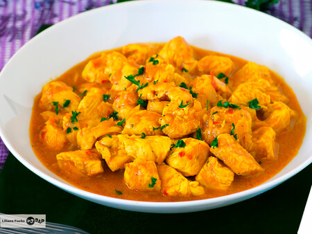

Recetario de Cocina Deliciosa

Pollo al Curry
Categoría: Platos Principales
Ingredientes:
- 500g de pechuga de pollo en cubos
- 2 cucharadas de curry en polvo
- 1 lata de leche de coco
- 1 cebolla picada
- 2 dientes de ajo picados
- 1 cucharada de jengibre rallado
- Sal y pimienta al gusto
- Aceite de oliva
Instrucciones:
- Calentar el aceite de oliva en una sartén grande y dorar el pollo.
- Retirar el pollo y en la misma sartén, sofreír la cebolla, el ajo y el jengibre.
- Añadir el curry en polvo y cocinar por 1 minuto.
- Agregar la leche de coco y devolver el pollo a la sartén.
- Cocinar a fuego lento durante 20 minutos, sazonar con sal y pimienta.